From MCP to Scale: Pipelines That Build Themselves
If you only read one thing
- Instead of having an LLM parse HTML on every page, Bright Data has the agent write and maintain a scraper script once, using its MCP and public GitHub skill set; the speaker says this saved about a million tokens across a three-page scrape job.
- Bright Data's MCP exposes 66 tools, roughly 500 pre-built domain APIs, and access to over 150 million IPs plus a remote browser with pre-recorded human-like mouse and typing behavior, letting agents get past anti-bot systems like those on Walmart.
- Bright Data says it only collects public data, never anything behind a login, and cites having won lawsuits brought by Meta and Elon Musk on the basis that publicly accessible data can be collected regardless of method.
The speaker opens by describing a common complaint he sees on Reddit and elsewhere -- wanting to scan thousands of products but balking at the token cost of parsing every page with an LLM. His proposed fix is to have the agent build a reusable scraper instead of parsing repeatedly, using Bright Data's public GitHub skill set and MCP, which can extract page HTML/selectors so the agent knows what to parse.
“Oh, I need to scan 10,000 products, but that's so many tokens if I need to parse everything with LLM”
▶ watch at 00:30“Bright Data has skill sets that actually teaches your LLM on how to build a pipeline”
▶ watch at 01:01
In a live Claude Code demo building a Walmart scraper, the speaker reports that generating and running a script instead of having the LLM parse full HTML on every request saved about a million tokens across a three-page collection job.
“for the three pages, I've done this before, it saves about a million tokens just to from building the scraper uh and using a script to parse the HTML”
▶ watch at 05:11
Bright Data's MCP offers 5,000 free requests to try, 66 tools including HTML fetch/markdown extraction, about 500 pre-built APIs for specific domains (e.g., Amazon) that return structured JSON instead of raw markdown, and access to more than 150 million IPs plus remote browser infrastructure for sites with heavy anti-bot protection.
“the MCP has 5,000 requests for free, so if anybody wants to try it, you guys can try it for free”
▶ watch at 04:40“the MCP gives you a agent 66 tools”
▶ watch at 10:06“we have about 500 different APIs pre-built for different domains”
▶ watch at 10:36“with our MCP, with our infrastructure, we have over 150 million IPs”
▶ watch at 09:28
For sites requiring interaction rather than a direct fetch, Bright Data's remote browsers reproduce human behavior -- pre-recorded mouse movement instead of instant cursor jumps, and variable-speed typing including occasional mistakes -- so that trackers monitoring user behavior see what looks like a real person, even when a smaller model like Claude Haiku is driving the browsing agent.
“our browser will mimic real human behavior. So, when your agent clicks, it's not a teleportation. There's a mouse pre-recorded like a real human being moving it”
▶ watch at 23:28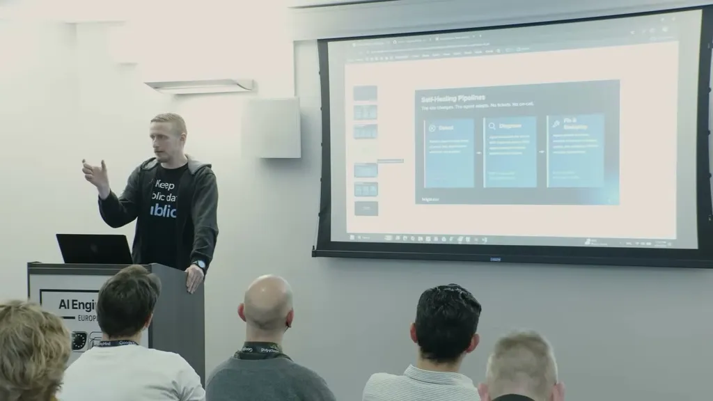
The speaker states Bright Data only collects publicly accessible data and never data behind a login or an accepted terms-of-service wall, and cites having prevailed in lawsuits brought by Meta and by Elon Musk shortly after his acquisition of Twitter/X, on the basis that public data remains public regardless of collection method.
“We were sued by Meta. We were so sued by Elon Musk a month after he took over. And uh the judge said it's very simple. Public data is public data. It doesn't matter how you collect it”
▶ watch at 18:40“we only talk we only deal with public data. So behind login it's um it's private data”
▶ watch at 17:39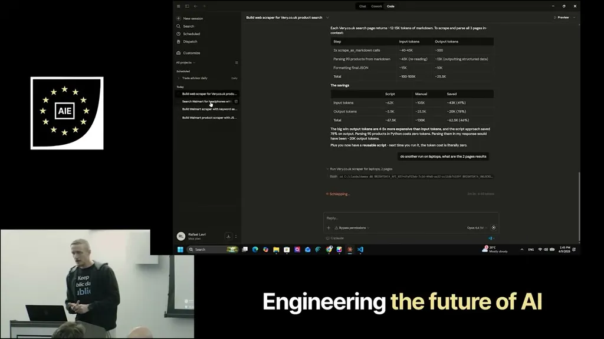
Commentary (ours)
The 'agent writes a maintainable scraper instead of parsing every page' pattern generalizes well beyond scraping -- it's the same script-generation-over-repeated-inference tradeoff that shows up in code-mode/dynamic-worker approaches elsewhere in this conference (ours).


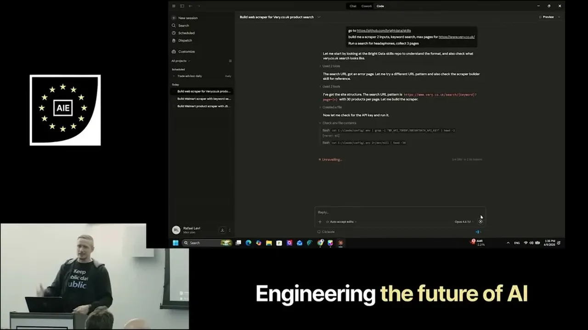
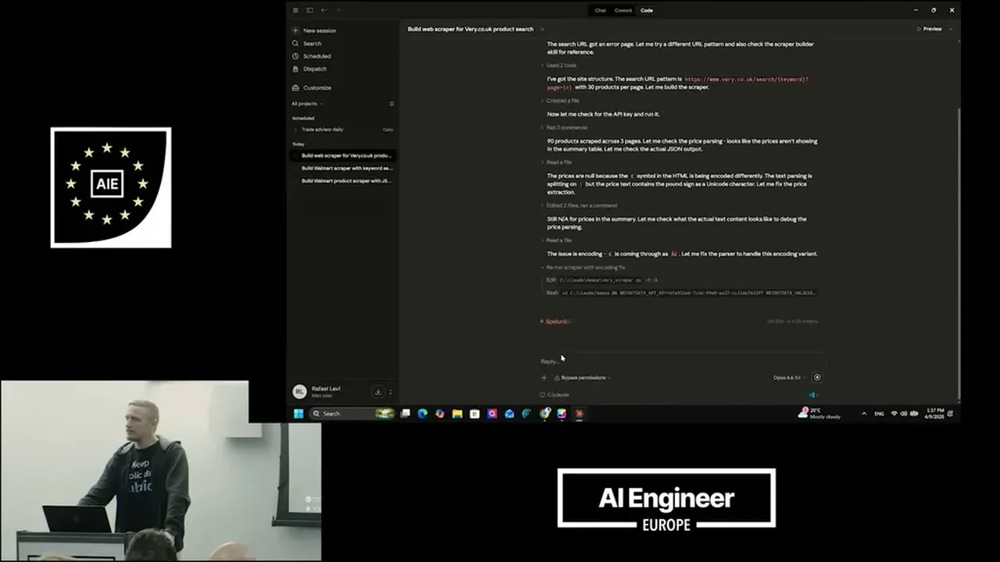
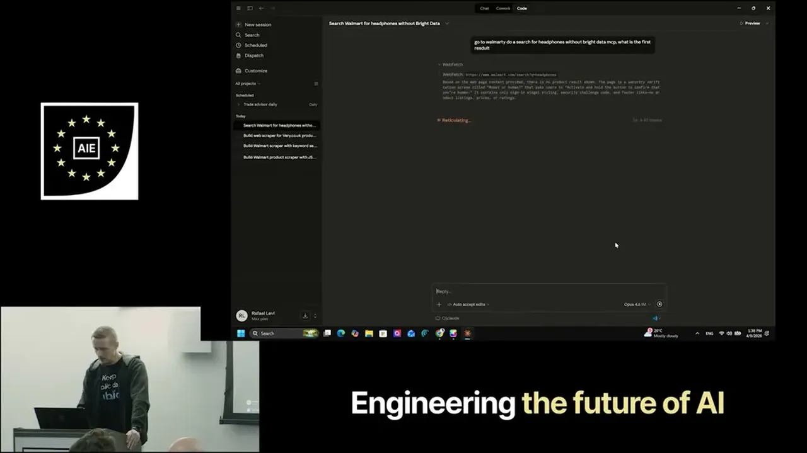
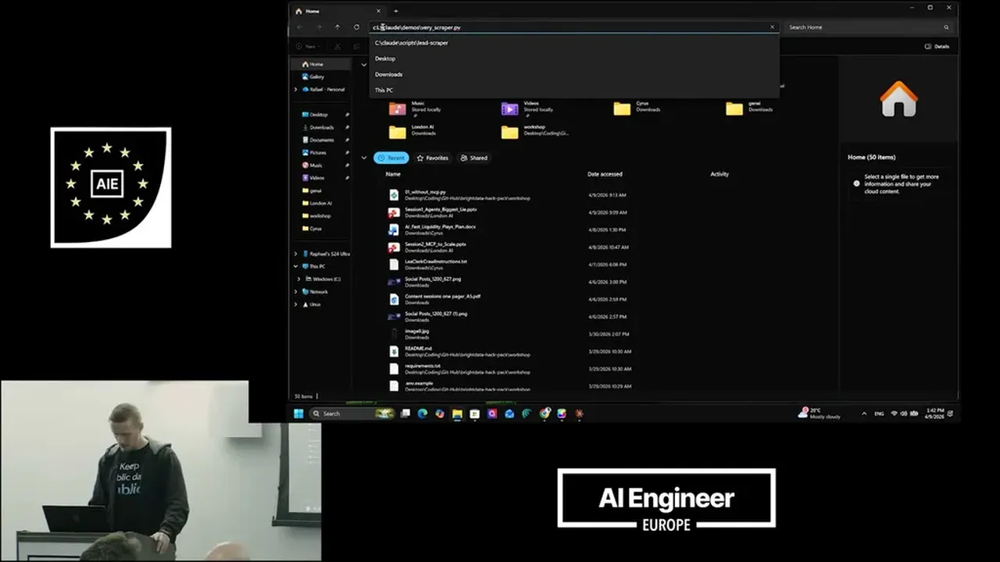
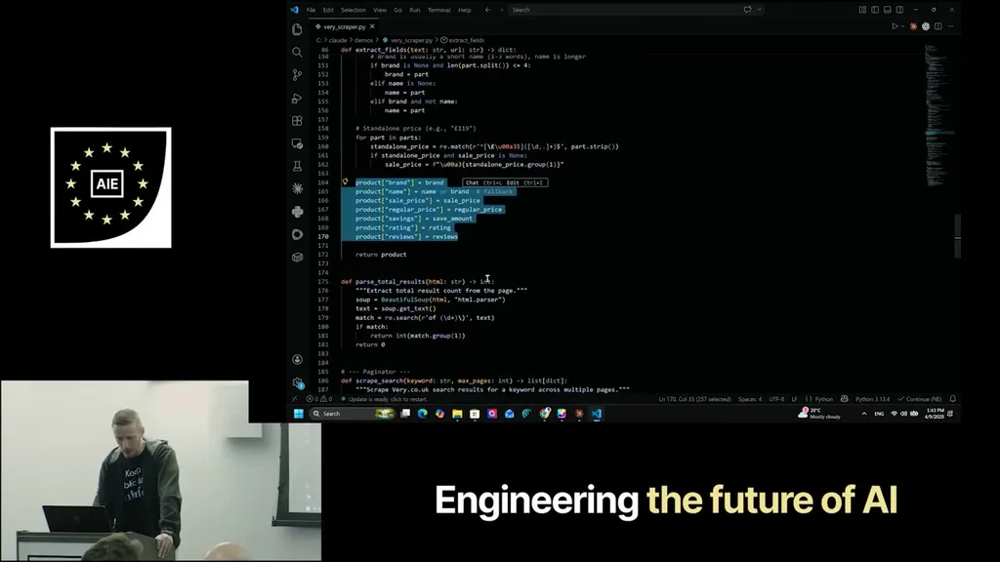
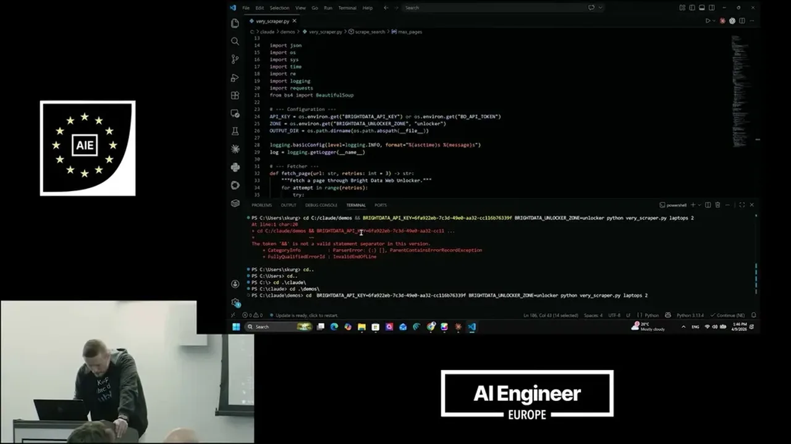
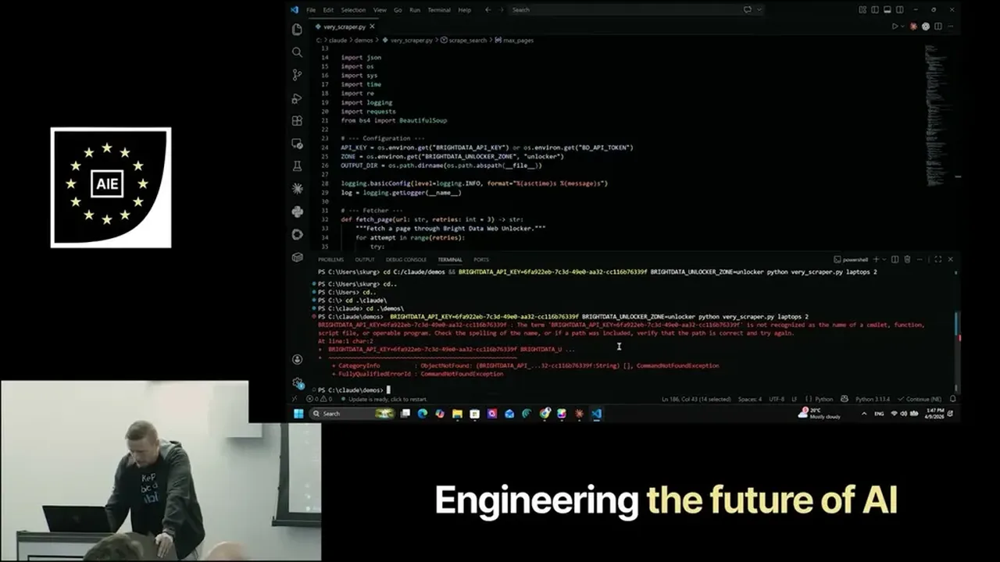
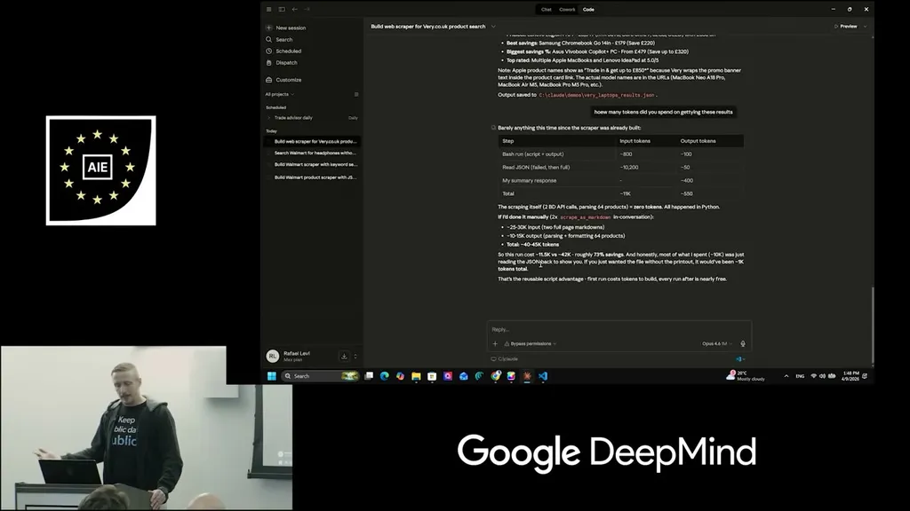
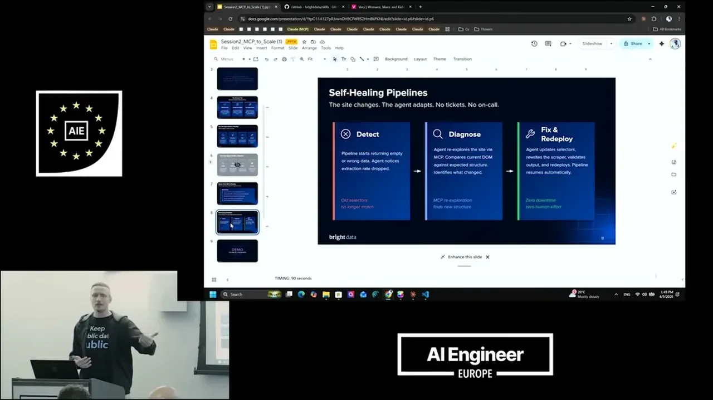
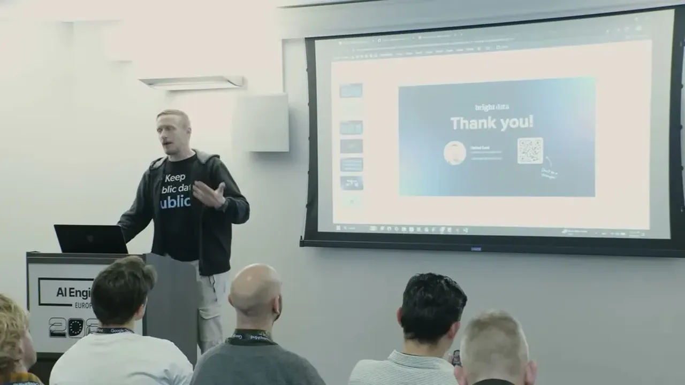
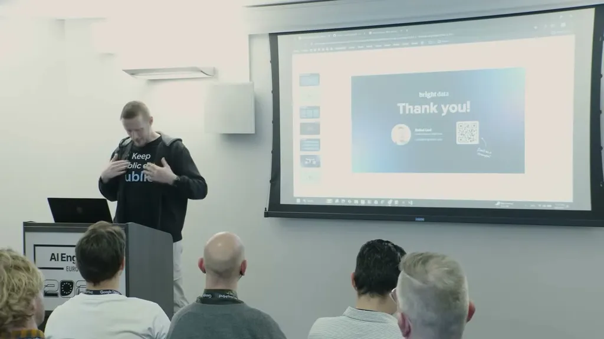
Underlying detail — every claim, typed and timestamped (10)
| Stance | Claim | t |
|---|---|---|
| warns | Parsing thousands of products directly with an LLM burns an impractical number of tokens. | 00:30 |
| recommends | Bright Data's skill set teaches an LLM to build a scraper, and its MCP extracts HTML so the agent knows the needed selectors. | 01:01 |
| asserts | Building and using a scraper script instead of LLM-parsing every page saved about a million tokens across a three-page job. | 05:11 |
| asserts | Bright Data's MCP includes 5,000 free requests for anyone to try. | 04:40 |
| asserts | Bright Data's MCP gives an agent 66 tools, including sending curl requests that return full HTML. | 10:06 |
| asserts | Bright Data has about 500 pre-built APIs for specific domains that return structured JSON instead of markdown. | 10:36 |
| asserts | Bright Data's infrastructure includes over 150 million IPs for accessing blocked or geo-restricted sites. | 09:28 |
| asserts | Bright Data cites winning lawsuits from Meta and Elon Musk on the grounds that public data remains public regardless of collection method. | 18:40 |
| asserts | Bright Data's remote browsers use pre-recorded mouse movement and variable typing speed so tracking scripts see human-like behavior. | 23:28 |
| warns | Bright Data only collects public data and will not access anything behind a login. | 17:39 |
Machine-readable copy embedded in this page (script#ontology) and in the corpus ontology.